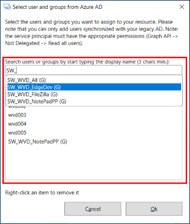
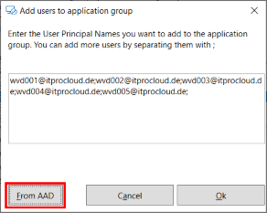
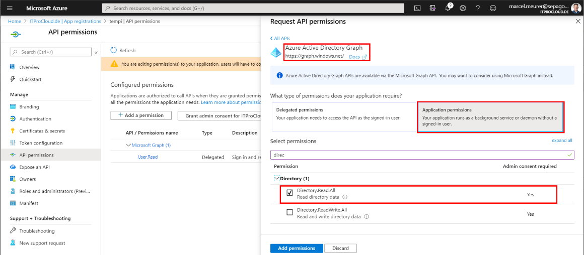

Today (early April), it’s not possible to join groups to application groups or desktop in Windows Virtual Desktop. Users have to be assigned directly with their user principal name (UPN). With WVDAdmin, you can do this by entering or copying the UPN’s into a text field.
From Version 1.4.7 you have another option: You can now browse the Azure AD for users AND groups to add them.

If you have added users and groups with the new function, WVDAdmin will fill out the text field with the UPN’s of the selected users and group members (only members, no external accounts).

This function doesn’t resolve the missing function in the WVD/AVD but can give you an easier way to handle this until the function is integrated into WVD/AVD itself.
Requirement: The service principal needs permission to browse the Azure Active directory. To do this go to the Azure Portal -> Active Directory -> App Registration -> Select your Service Principal -> API Permissions Add the permission “Azure Active Directory Graph” -> Application Permission -> Directory.Read.All

To be read for the WVD Spring Update you have to give the service principal access to the Graph API: Add the permission “Microsoft Graph” -> Application Permission -> Directory.Read.All

To consent the permission and administrator of Azure AD have to grant this: